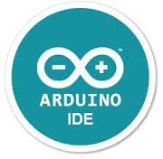

Arduino es una plataforma electrónica de código abierto basada en hardware y software fáciles de usar.
Las placas Arduino pueden leer entradas (luz en un sensor, un dedo en un botón o un mensaje de Twitter) y convertirlas en una salida:
activar un motor, encender un LED o publicar algo en línea. Puede decirle a su placa qué hacer enviando un conjunto de instrucciones al microcontrolador de la placa.
Para ello se utiliza el lenguaje de programación Arduino (basado en Wiring), y el Software Arduino (IDE), basado en Processing el cual a su vez esta basado en C++.
A lo largo de los años, Arduino ha sido el cerebro de miles de proyectos, desde objetos cotidianos hasta complejos instrumentos científicos.
Una comunidad mundial de creadores (estudiantes, aficionados, artistas, programadores y profesionales) se ha reunido en torno a esta plataforma de código abierto;
sus contribuciones han sumado una increíble cantidad de conocimiento accesible que puede ser de gran ayuda tanto para principiantes como para expertos.
Arduino nació en el Ivrea Interaction Design Institute como una herramienta sencilla para la creación rápida de prototipos, dirigida a estudiantes sin experiencia en electrónica y programación.
Tan pronto como llegó a una comunidad más amplia, la placa Arduino comenzó a cambiar para adaptarse a nuevas necesidades y desafíos,
diferenciando su oferta desde simples placas de 8 bits hasta productos para aplicaciones de IoT, dispositivos portátiles, impresión 3D y entornos integrados.
El Arduino IDE es el software libre oficial de Arduino el cual se utiliza para programar las distintas placas.
Software: Arduino IDE
Son microcontroladores muy complejos y preparados para realizar infinitas posibilidades.
Son de haftware libre por lo que ademas de todo los modelos que hay disponibles oficiales tambien hay miles no oficiales y incluso tu mismo puedes crearte el tuyo propio.
Modelos de plaas oficiales: Haftware